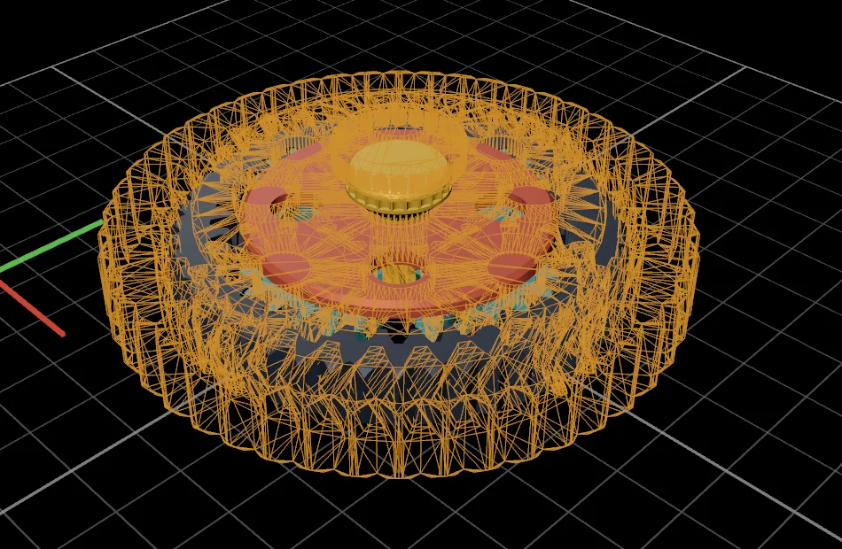
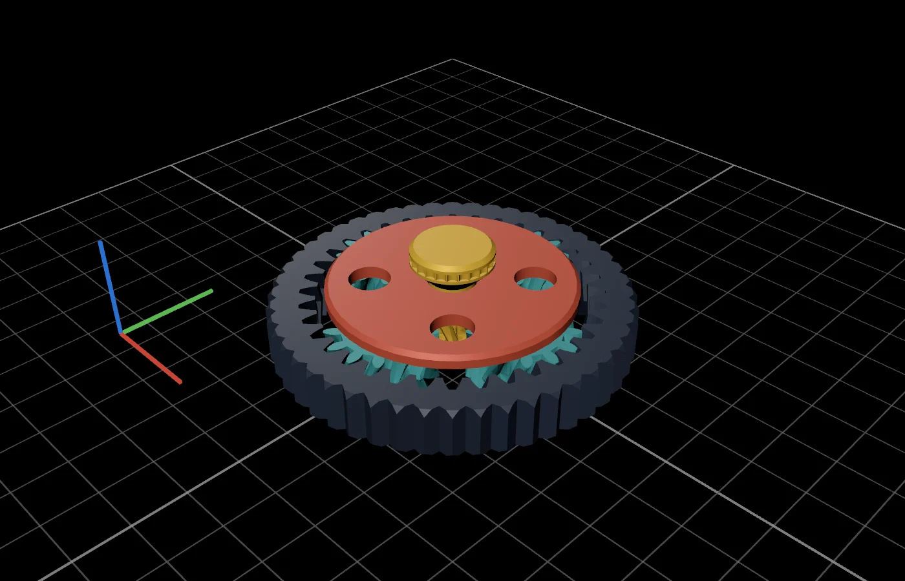
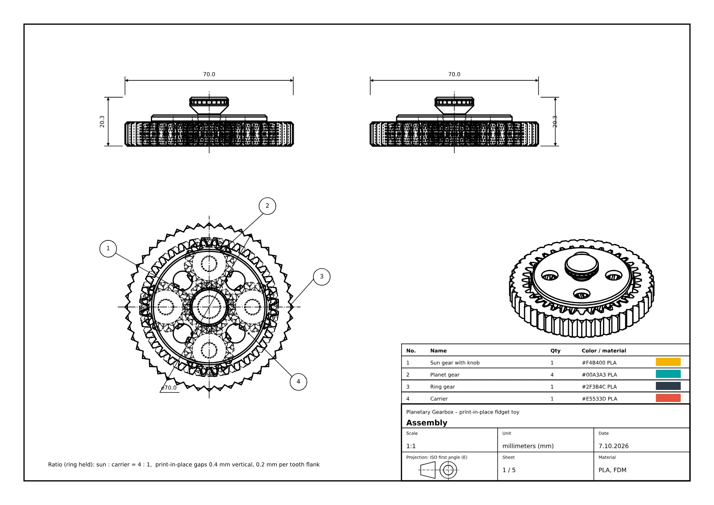
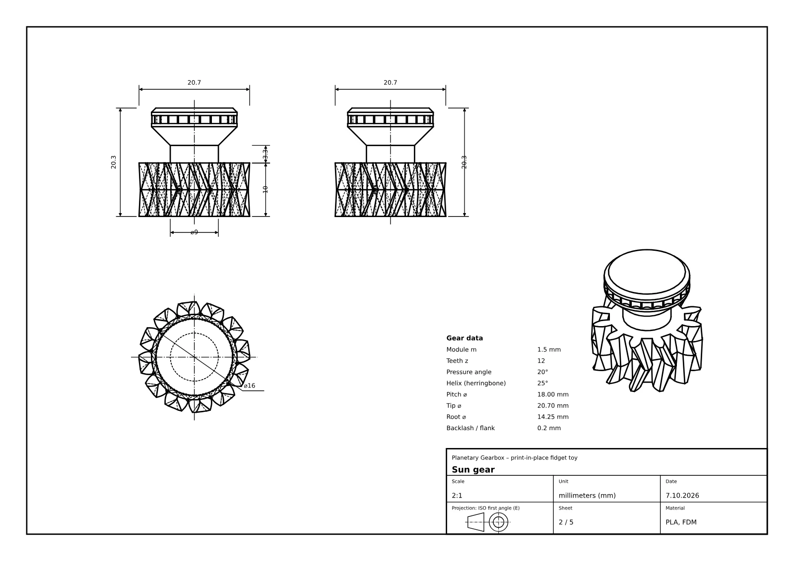
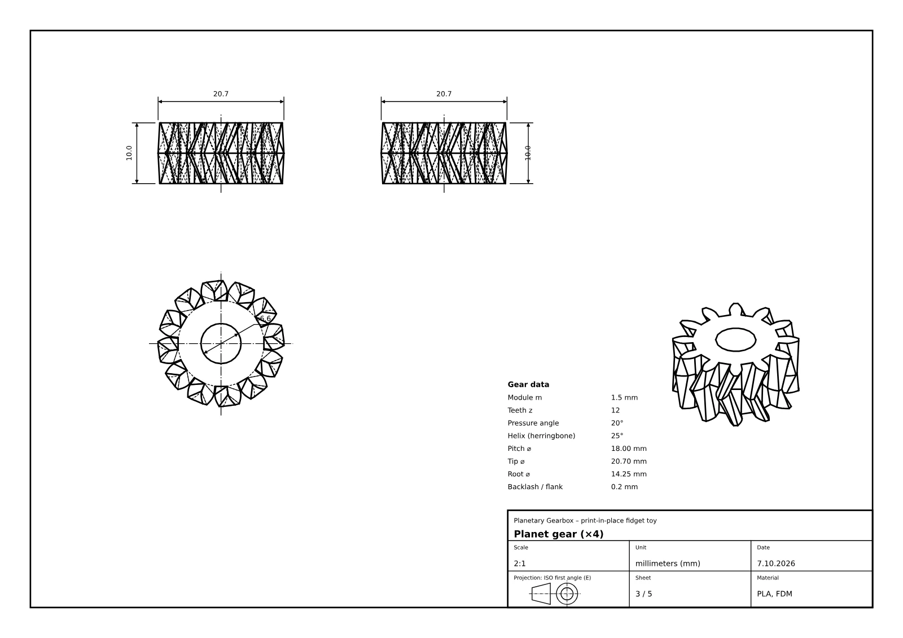
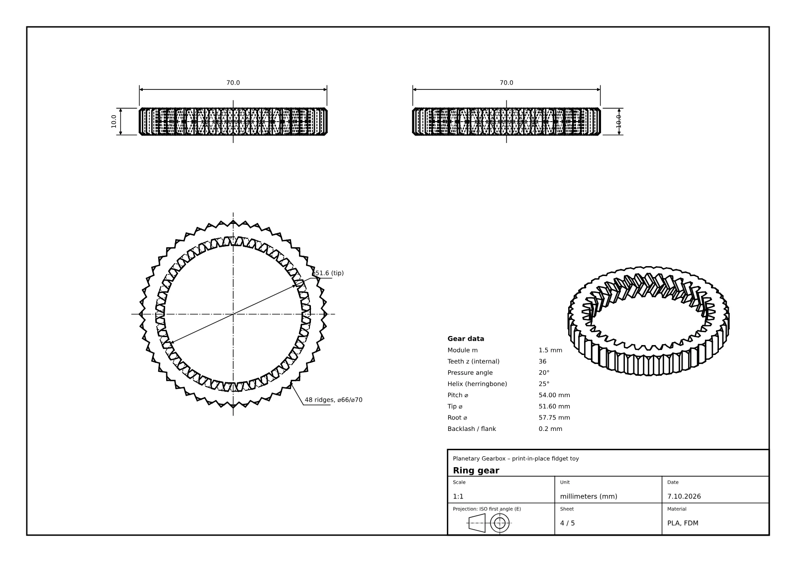
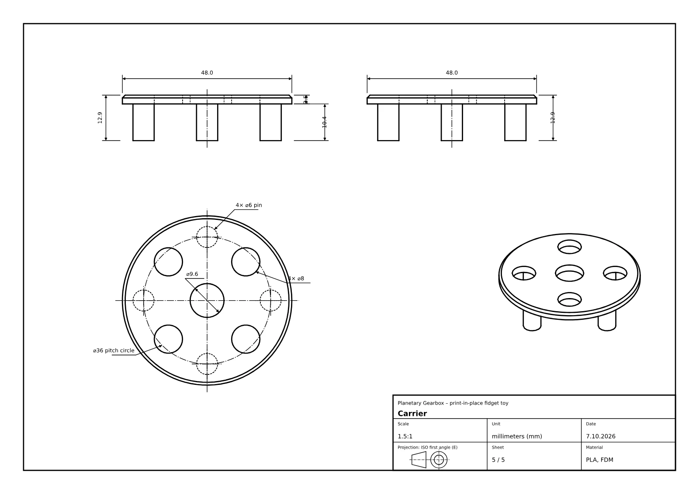
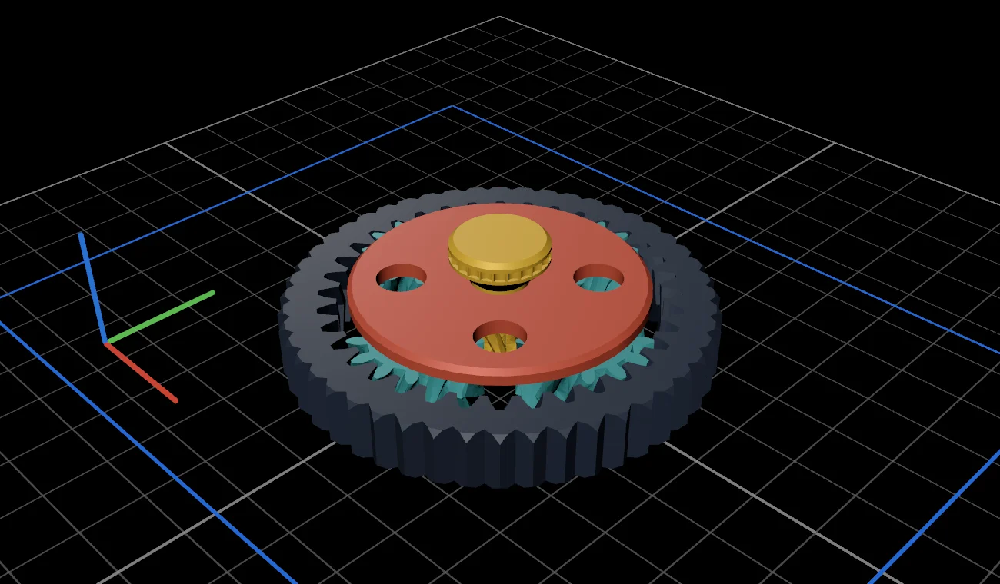

Every change is a version.
“Make it 90 mm across.” Version 2 lands next to version 1, outlined in orange. Go back any time: the chat and what Claude remembers come back too.

Describe a part. Print it.
Parametric CAD, written and run by the Claude Code on your Mac.

This planetary gearbox was made in CAD Studio from one prompt.
You type
A print-in-place planetary gearbox, about 70 mm across. Four planets, a knurled ring, four colors. Animate it turning with real gear ratios.
37 minutes later, it turns. Simulated, collision-checked, ready to print.
Every step streams into the chat as it happens: the code being written, the model being built, the drawing being checked. The 3D view, the parameters and the technical drawing land the moment the files do.
A print-in-place planetary gearbox fidget toy, about 70 mm across: a sun gear with a knob on top, four planet gears, a ring gear with a knurled outer rim, and a carrier. Give it four colors (sun, planets, ring, carrier) so it looks great. Animate it turning with real gear ratios.
Creates model.py · 786 lines
The model builds and all parts are valid. The collision checks in the motion simulation are too slow right now, so I'm speeding them up.
Runs python model.py
The full run now takes about 20 s with no collisions found. Next I'm checking the drawings.
Reads output/schematic.png
I built the print-in-place planetary gearbox, about 70 mm across and 20 mm tall. It has a 12-tooth sun with a fluted knob, four 12-tooth planets and a 36-tooth ring with a knurled rim. The gears are herringbone, which locks everything together vertically, and they print assembled on the bed.
Gear ratio: with the ring held, the knob turns the carrier at 1/4 speed and the planets at −1/2 speed. In the motion simulation of two knob turns, nothing collides at any checked moment.

Claude writes a parametric build123d script, not a mesh. Tooth counts, module and planets are named constants, and CAD Studio turns them into sliders. Change one and the gearbox rebuilds in seconds, without asking Claude again.
Ratio 4 : 1 · ring 36 teethPlanets assemble evenly
Assembled, exploded or laid out on your print bed. Hide a part, keep two together, open the plate in your slicer.
Ask for an animation and Claude simulates the mechanism in Python: masses, friction and the push of your hand. The real solids are checked for collisions in every third frame.
Spin-up
An ISO first-angle drawing comes with every model. The gearbox got five: the assembly with its parts list, then one sheet per gear with its gear data, all in a single PDF.




“Make it 90 mm across.” Version 2 lands next to version 1, outlined in orange. Go back any time: the chat and what Claude remembers come back too.

Print-in-place, with 0.4 mm gaps between the layers. It comes off the bed already turning.

Straight from the ring gear's drawing.
One click exports the lot as a ZIP.
CAD Studio runs your own Claude Code in a folder you choose. No accounts, no servers, nothing uploaded by the app.
Install Claude Code and run claude once in Terminal. CAD Studio uses your plan.
Drag it into Applications. It isn't notarized yet, so allow it in Privacy & Security, or run:
xattr -dr com.apple.quarantine "/Applications/CAD Studio.app"Pick your printer and units, and say what you need. Python and build123d are set up for you on first launch.